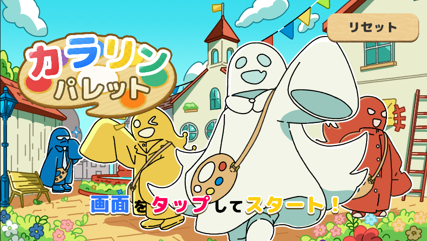
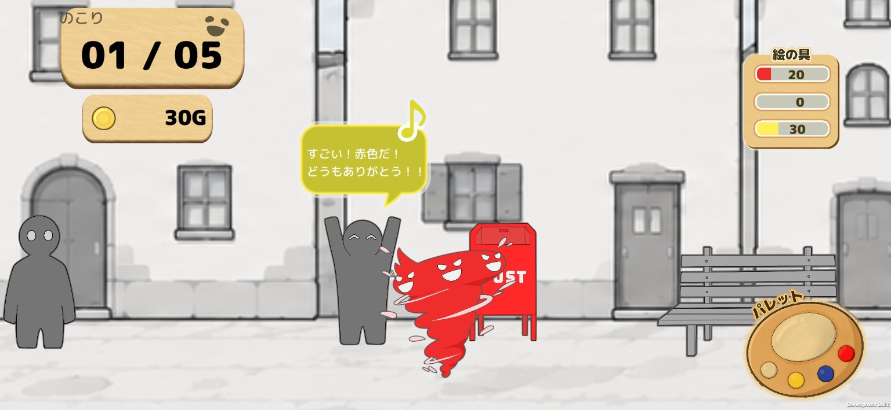
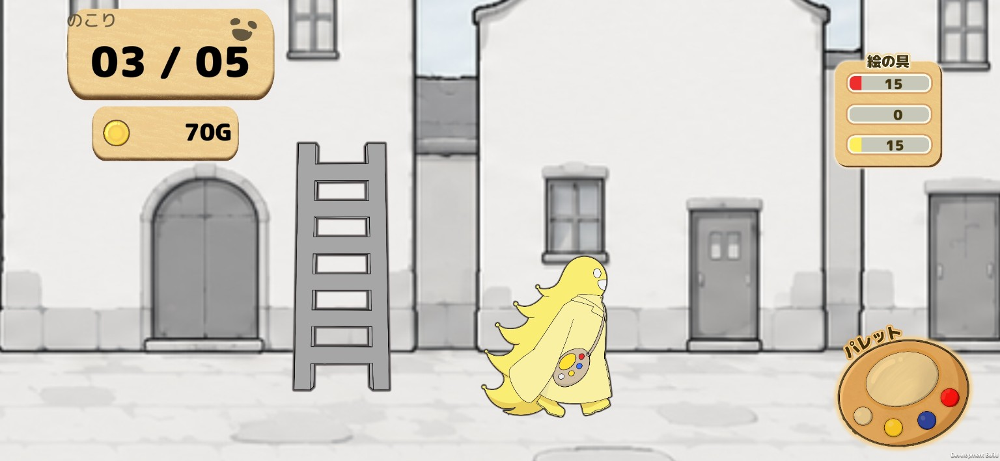
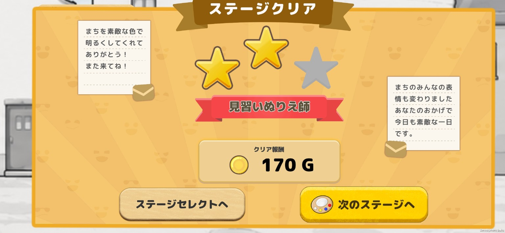
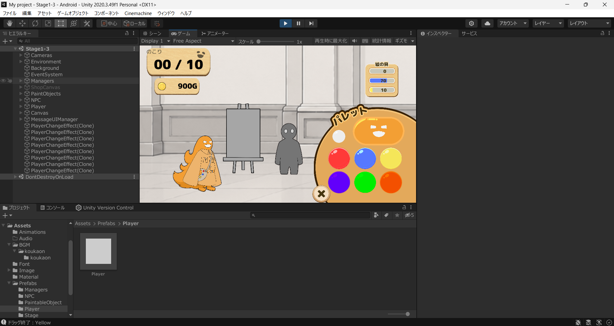

タイトル画面
ゲームの開始時に表示されるタイトル画面を制作し、プレイを始めるための画面部分を実装しました。
塗って楽しく人助け！
色を失った世界を、色を塗ることで変えていく2Dパズルアクションゲーム。 5人チームで約2か月かけて制作し、私は主にタイトル画面やプレイヤー操作、 色変更・塗りの処理など、ゲーム画面と操作に関わる実装を担当しました。
GitHubでプロジェクトを見る
LET'S PLAY!色を取り戻しながら進む、2Dパズルアクション。
本作は、色を失った世界を舞台に、色を塗るアクションを通じてステージを進めていくゲームです。 プレイヤーは色を使い分けながら、世界に変化を与えていきます。
チームで機能を分担しながら、タイトル画面からステージ内の操作まで、 ゲームとして遊べる一連の体験を形にしました。
ゲーム画面やプレイヤー操作に関わる機能を中心に担当。
ゲームの開始時に表示されるタイトル画面を制作し、プレイを始めるための画面部分を実装しました。
ステージ内の操作に加え、パレットから色を選び、プレイヤーの見た目に反映する処理を実装しました。
色を塗る動作に関わる処理や、アクションに合わせて表示するエフェクトを担当しました。
パレットに関する機能と、インク残量をゲージおよび数値で確認できる表示UIを実装しました。
実際のゲーム画面やプレイ中の様子を掲載するエリアです。




静止画だけでは伝わりにくい、実際のプレイの流れを動画で紹介します。
※動画の長さや内容に合わせて、後から見せたい場面を絞った短い紹介動画に差し替えることもできます。
実装だけでなく、チーム制作と操作性について学んだこと。
制作の初期段階では、メンバー間で仕様の認識をそろえることの難しさがありました。 操作方法を変更した際には、確認用の動画を共有し、完成イメージを具体的に伝えることを意識しました。 また、展示ではボタン操作の分かりにくさについて意見をもらい、 機能を実装するだけでなく、初めて遊ぶ人にも操作しやすいかを確認する重要性を学びました。